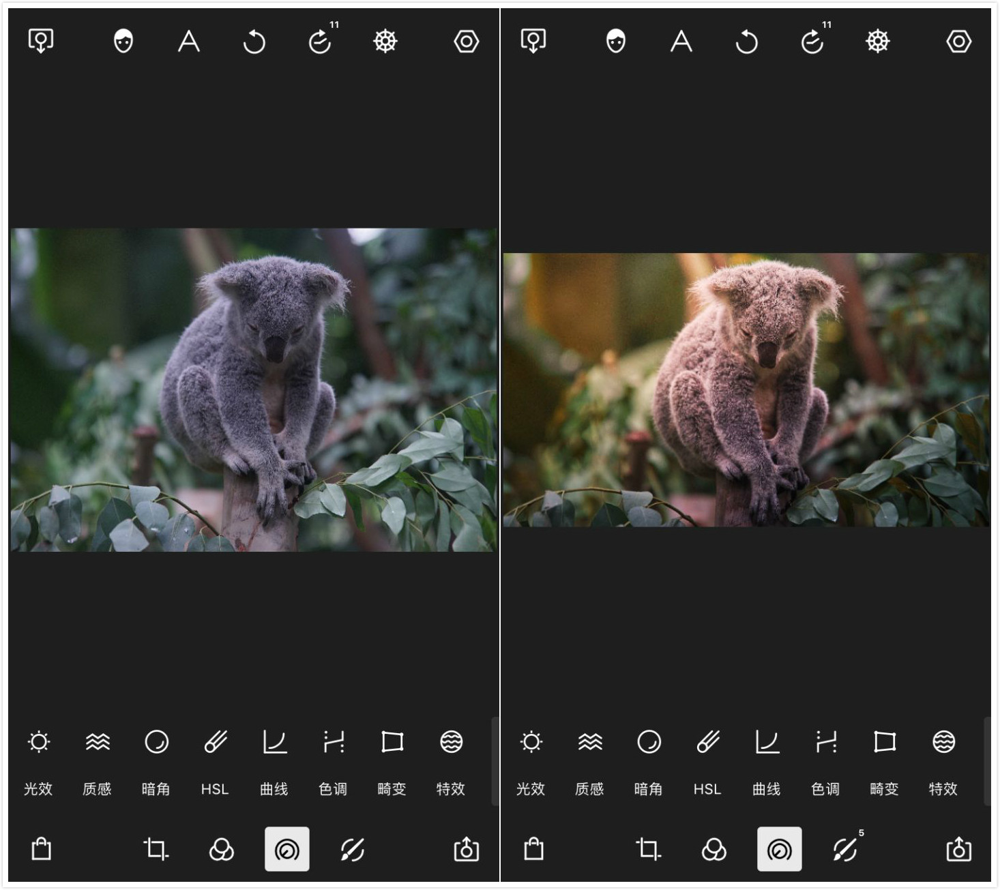
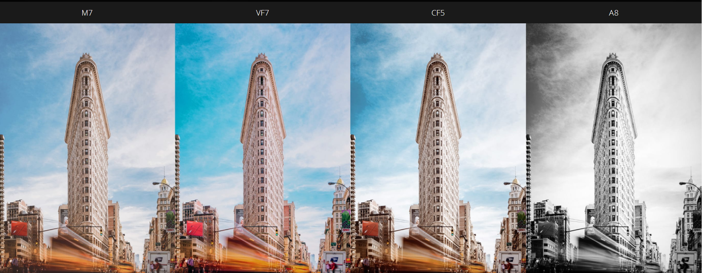

泼辣修图入选了App Store 2015和2016年度最佳应用，长期位于windows 10应用商店付费排行榜第一，泼辣修图用户也突破1000万。泼辣团队成员叶明用四个词语来概括泼辣修图的形象：专业、易用、持续成长、全平台。

泼辣修图现在已经拥有100多种调整工具，包括曲线、HSL、高低光、色调分离、选色调整、线性调整等，同时支持无限历史记录、自定义滤镜、高像素原尺寸无损输出，还拥有基于人工智能技术的人像面板、200多种滤镜。这些特性足以满足高质量的专业图像编辑需求，也让泼辣修图成为了移动端最为专业和全能的修图软件之一。

泼辣修图一直尝试在专业与易用之间寻求一个最好的平衡点。它采用了大量易用性设计来帮助提升用户体验。例如：
横竖屏切换设计（获得更大的可视范围）
软件内互动教程（帮助快速掌握软件）
可拖拽图标（根据自己的习惯打造用户界面）
自定义滤镜（将自己的调整保存为滤镜，方便直接使用）
二维码滤镜（将滤镜保存为二维码，方便共享）
无限历史记录（可以返回至任意一步操作）
方块式调整（可拖拽、可滑动的参数调整）
批量导出（一次性导出多张照片，可自动按顺序重命名照片）
自动增强（快速的对图片进行自动处理）
自定义色彩主题（根据自己喜好，改变软件的色彩主题）
……
泼辣修图能够满足专业人士的图像编辑需求，但泼辣修图不仅仅是为专业人士设计的，相反，“小白”用户也能够从泼辣修图迈出后期的第一步，逐渐成为高手。为了帮助大家更好的学习后期，泼辣修图做了这些事情：
泼辣修图软件内有一个“调整指南”，在这里你可以认识和了解常用工具的基础使用方法，例如色温、色调、曝光等。
泼辣修图还提供了软件内的互动教程，你可以在这里学习如何去雾、如何调整白平衡、如何校正失真等实例。所有的互动教程都是采用操作+引导的模式。
泼辣百科是一个后期知识学习网站，在这里你可以学习最为常见的后期概念，例如色彩、曲线、HSL等等，并且采用的是词条互联的模式，在查看一个词条时，你可以跳转至这个词条里面提及到的其他词条，方便建立完整的知识体系。网站中还有海量针对不同类型摄影的后期教程，包括文字图片形式和视频形式的教程，方便学习；以及15组、200多个不同风格的滤镜下载。可以说是干货满满。
微信公众号“泼辣修图”（微信号：polaxiutu）会不定期的推送后期教程，迄今为止已经推送了超过220篇的后期技巧和调整教程，累计获得了超过180万的阅读。在公众号最近推出的针对花卉拍摄的后期教程中，大家可以体会一下教程是多么简单易学而又效果神奇。
公众号内每周也会推出视频课程直播，通过动态演示的方式来讲解修图和摄影，这种模式可以实现普通的图文演示难以达到的效果。
泼辣修图应该是国内官方引导和教程最为丰富的修图软件之一。并且大部分的修图教程和修图课程都是通用型知识，也就是说这些技巧不仅适用于泼辣修图，也适用于绝大多数修图软件。所以，即使你不是泼辣修图用户，也能够从这些后期教程中获益。
泼辣修图现在覆盖了Web/iOS/Android/Windows/Mac等等主流平台，用户的个人信息（例如创建的自定义滤镜）可以快速在各个平台之间同步。最为重要的是，只要用户解锁了任意一个平台的全部高级功能，或者购买了泼辣修图的会员服务，那么就可以同步解锁所有平台的高级功能。
部分素材来源：https://www.zhihu.com/question/31464353?sort=created